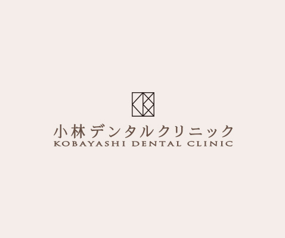

- ホーム
- 予防歯科
予防歯科診療Preventive
健康な口腔環境を作るために
日本では予防歯科の概念が広まりつつありますが、今でも「歯医者は痛くなってから行くところ」という考え方が心に深く根付いています。私たちの歯は再生することのない器官なので、治療を繰り返すほど、寿命も縮まっていきます。それだけに予防に優る治療はないといえます。そこで当院では、歯を削ることや再治療する必要のない、健康な口腔環境づくりのお手伝いをしております。
歯は加齢とともになくなるものではありません

予防歯科の先進国であるスウェーデンは、80歳になった時に25本も歯が残っているからです。親知らずの除いた永久歯は、全部で28本生えてきますので、80歳までたったの3本しか歯を失っていないことになります。一方、日本人の残存歯数はその半分以下です。
そこで注目していただきたいのが予防歯科の受診率です。スウェーデンは9割以上の人が定期的に予防歯科を受診しているのに対し、日本では2％にとどまっているのが現実です。つまり、歯を失う原因は加齢ではなく、不十分な口腔ケアにあるといえるのです。
口腔ケアを充実させるために

プロフェッショナルケアとセルフケアの両立
虫歯や歯周病を効率良く予防するための口腔ケアは、歯科医院で受ける「プロフェッショナルケア」とご自宅で行う「セルフケア」の2つに分けられます。どちらから一つではなく両方を充実させることで、虫歯や歯周病にかかりにくい衛生的な口内環境を確立できます。
歯科医院で受けるプロフェッショナルケア

PMTC
PMTCとは、プロフェッショナルによる歯のクリーニングです。電動のブラシとフッ素り入りのペーストを用いて、歯列の隅から隅まできれいにお掃除します。ステインやバイオフィルなど、歯ブラシによるブラッシングでは除去できない汚れも一掃します。細菌の住みかがなくなるだけでなく、歯が持つ本来の白さを取り戻せることから、審美面においてもメリットの大きい予防処置です。
PMTCの流れ
- 染め出し液で歯垢のチェック
- フッ素入りのペーストを塗布
- 歯面のクリーニング
- 仕上げ磨き
- フッ素塗布による歯質の強化
※表は左右にスクロールして確認することができます。
口腔検査 |
歯磨き指導 |
スケーリング（歯石除去） |
|---|---|---|
|
|
|
|
| お口の中を拝見し、歯や歯茎に異常がないかをチェックします。口内環境に合わせて、最適な予防方法をご提案します。 | 患者さまお一人おひとりに合わせた歯磨きの仕方や歯ブラシの選び方をアドバイスします。セルフケアの効率が向上します。 | スケーラーと呼ばれる器具を使って歯石を除去します。歯石はとても硬い物質なので、スケーリングでなければ取り除けません。 |


ご自宅で行うセルフケア
※表は左右にスクロールして確認することができます。
歯磨き |
フッ素入りの歯磨き剤 |
|---|---|
|
|
|
| 歯磨きは予防の基本です。毎日行うものであり、適切な方法を身に付ける必要があります。自分ではきれいに磨けていると思っていても、実際は磨き残しができているものです。歯科衛生によるブラッシング指導を受けて、正しい歯磨きを継続的に行っていきましょう。 | 歯磨き剤を使用するのであれば、フッ素入りを選びましょう。歯の再石灰化や歯質の強化につながります。 |
フロス・歯間ブラシ |
マウスウォッシュ |
|
|
 |
| 歯と歯の間は、デンタルフロスか歯間ブラシを活用してください。歯間部の汚れは歯ブラシで取り除くのが困難です。 | 就寝前にマウスウォッシュを使用することで、睡眠中の細菌の活動を抑えることができます。眠っている間は唾液の分泌量が低下することから、積極的なケアが必要となります。 |